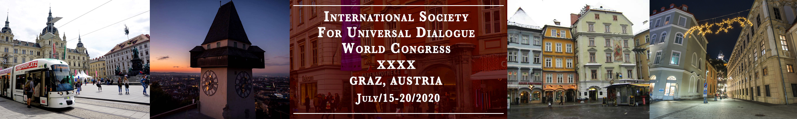
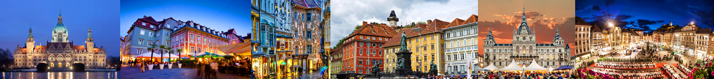

Welcome. Join us in our upcoming 2020 Congress at the beautiful city Graz, Austria!
Graz is the capital city of the southern Austrian province of Styria.
At its heart is Hauptplatz, the medieval old town’s main square. Shops and restaurants line the narrow surrounding streets, which blend Renaissance and baroque architecture. A funicular leads up Schlossberg, the town hill, to the Uhrturm, a centuries-old clock tower. Across the River Mur, futuristic Kunsthaus Graz exhibits contemporary art.
